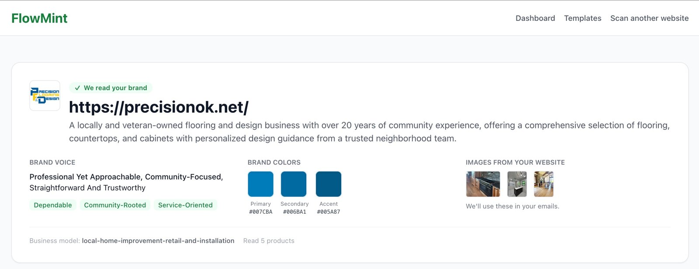

Free for this class
The arrows are emails.
I built a thing that writes them.

FlowMint reading a real Stillwater business from its website. Voice, colors, products, in about 30 seconds.
1
Paste a website URL.
No site yet? Paste a brand you admire and read how they do it.
2
It reads the voice, the colors, the products.
Then it writes the emails for each arrow,
in that voice, ready to paste into Klaviyo or Mailchimp.
One flow per arrow:
Welcome
Cart abandonment
Post-purchase
Win-back
Review request
Referral
flowmint.me
· Free while it’s in beta, which is right now. No signup to try it. Put it in your marketing plan and tell me what broke.
13